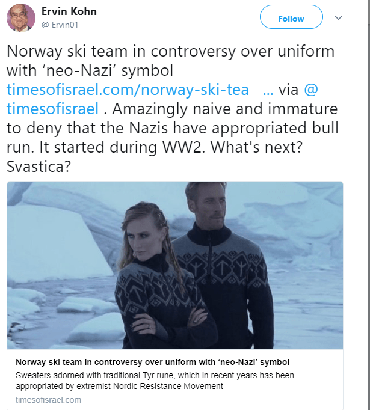
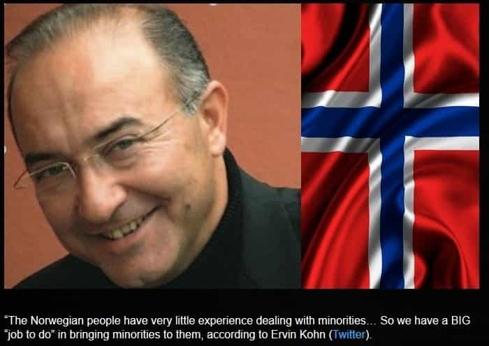
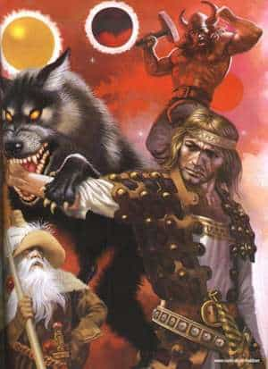

Apparently, if air comes in and out of your lungs, you are a Nazi. Well, Nazis did breathe, didn’t they? So, there you go, racist! Although it sounds totally absurd, this is the type of argument the left now uses after claiming that the ski team representing Norway for the 2018 Olympic Games celebrates National Socialism by using Viking runes that are at least two-millennia-old and in the written language of their forefathers.
The same old tactic
Various left-leaning rags attacked the Norwegian Olympic team on their outfit, suggesting that the runes promoted racism and demanded an apology and the sale of the sweater to be banned. Like usual, the open borders advocates are the first ones to cry like the victims they are and lie through their teeth.


I knew I saw that face somewhere
They probably imagine that the Norwegian athletes are goose-stepping in their South Korean hotels before doing the Roman salute on the slopes to be more aerodynamic.
A tale of bravery
The rune Tiwaz is the symbol of Tyr, the god of war, justice, and treaties in Norse mythology and the bravest of the Aesir. The Viking Eddas recount how the Gods attempted to trap the giant wolf Fenrir, as the prophecy told that he will grow more restless and dangerous and would eventually take part in the Ragnarök, the Twilight of the Gods.

As a guarantee of good faith, Tyr placed his hand between the jaws of the monstrous wolf Fenrir while the gods, pretending sport but intending a trap, bound the wolf with a magical ribbon, made of the sound of a cat’s footfall, the beard of a woman, the roots of a mountain, bear’s sinews (meaning nerves, sensibility), fish’s breath and bird’s spittle.
When Fenrir realized he had been tricked, he bit off Tyr’s hand.
Such were the deeds of Tyr. The ultimate sacrifice of one’s physical integrity for the greater good and the protection of his kith and kin. An altruistic sentiment that is one of the pillars of Western identity. Is there any value that is more European than this one?
Why are they so afraid?
I believe that what upsets the narrative serfs the most is that these unapologetic Nordics are not constantly groveling for who they are, like their neighbours in Sweden. They send an image of strength and look like the kind of individuals that does not bow down to political correctness. Seeing the “Tor Masculine Sweater” (its official name) is enough for leftists to hyperventilate.
It is certainly not a coincidence if the rune of Tyr is being demonised even more than Algiz, the other rune present on the kit. Those in charge are truly aware of the power that this symbol embodies.
It is a most unwelcome sight for the enemies of freedom in those times where every man is shamed for following his nature and our society is feminised a bit more every day.
The rune of man
This arrow pointing upwards, this spear, triggers something very deep in the subconscious of man. Tiwaz exhorts men to strive, to look for something greater and pursue noble goals. It is interpreted as the key which opens the gate to the skies, that will allow mankind to reach enlightenment.
Being the symbol of courage, unbowed masculinity, and male strength, Tiwaz represents everything the Left hates and fears. It is an authentic European symbol that connects all Westerners to their ancient roots.
It is important to notice that Agal or Algiz, the other rune, was not vilified with the same accusations, even if it was chosen in the past by thought criminals and other bêtes noires of the system such as Dr. William Luther Pierce.
Only the tip of the iceberg
The esoteric nature of Tiwaz and the weight it carries in masculine symbolism might explain why the slaves of the elites sweat with fear when they witness its resurgence and why the mainstream media focuses on an apparently small issue.
Here is a video that Oleg, a fellow Norman and Viking specialist made on the subject, wondering why European children are sent to mosques while runes are seen as evil (don’t forget to activate the English subtitles in the bottom right corner of the video):
You can watch Oleg’s work on his two YT channels, one dedicated to self-improvement and fitness and the other focusing on the history of paganism and its relevance today.
Être de gauche nuit à gravement à votre virilité et à celle de votre entourage
Luckily, the company that sells the sweaters, Dale of Norway, is not run by frail cucks and they refused to back down. They will continue to sell the sweater and provide equipment for the Norwegian team.
Many social media users profusely mocked those who were offended, joking on the fact that the symbol “This way up” or every Tuesday in the week (its name comes form Tyr) should also be banned, following that logic.
Read More: Will The Norwegian People Disappear?


{kind=link}
{kind=link}